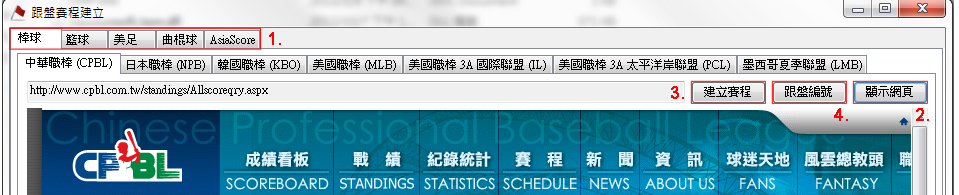
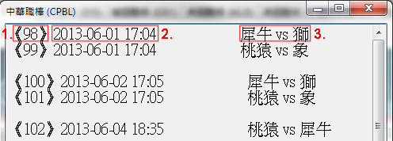
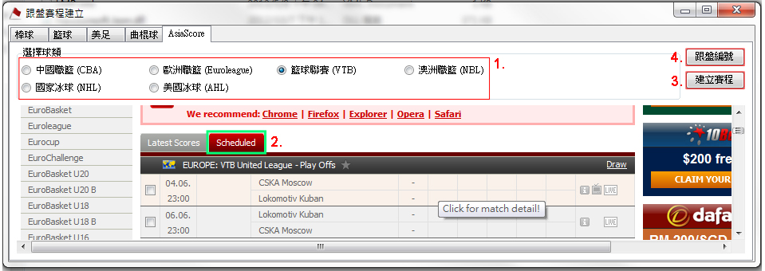

新增賽程
一、下載賽事建立軟件
(系統設定 -> 下載賽事建立軟件)
二、建立賽事 (棒球、籃球、美足、曲棍球)

操作步驟：
- 選擇要建立的球種，可以建立的賽事請參考 (四、程式標籤)
- 顯示網頁：顯示賽事的網頁
- 建立賽程：點擊此按鈕出現對話視窗，詢問是否建立賽事，請按【是】建立賽事，完成後將會顯示訊息提醒你新建立的賽事數量
例如：如果總場次為 35 場，現存已有12場，訊息會提醒您說已經新增23場
請注意已存在的賽事不會被修改，您必需手動修改
- 跟盤編號：點擊此按鈕出現視窗，顯示賽事的跟盤編號

- 跟盤編號
- 比賽日期與時間
- 比賽隊伍
三、建立賽事 (AsiaScore)

操作步驟：
- 選擇要建立的賽事
- 點擊標籤【Scheduled】，顯示新的賽程
- 建立賽程：點擊此按鈕出現對話視窗，詢問是否建立賽事，請按【是】建立賽事，完成後將會顯示訊息提醒你新建立的賽事數量
例如：如果總場次為 35 場，現存已有12場，訊息會提醒您說已經新增23場
請注意已存在的賽事不會被修改，您必需手動修改
- 跟盤編號：點擊此按鈕出現視窗，顯示賽事的跟盤編號
- 跟盤編號
- 比賽日期與時間
- 比賽隊伍
四、程式標籤
- 棒球
- 中華職棒 (CPBL)
- 日本職棒 (NPB)
- 韓國職棒 (KBO)
- 美國職棒 (MLB)
美國職棒3A聯盟
- 美國職棒 3A 國際聯盟 (IL)
- 美國職棒 3A 太平洋岸聯盟 (PCL)
- 墨西哥夏季聯盟 (LMB)
- 籃球
- 日本職籃 (BJ)
- 韓國職籃 - 男子 (KBL)
- 韓國職籃 - 女子 (WKBL)
- 美國職籃 (NBA)
- 美國女子職籃 (WNBA)
- 美足
- 曲棍球
- AsiaScore
- 中國職籃 (CBA)
- 歐洲職籃 (Euroleague)
- 籃球聯賽 (VTB)
- 澳洲職籃 (NBL)
- 國家冰球 (NHL)
- 美國冰球 (AHL)